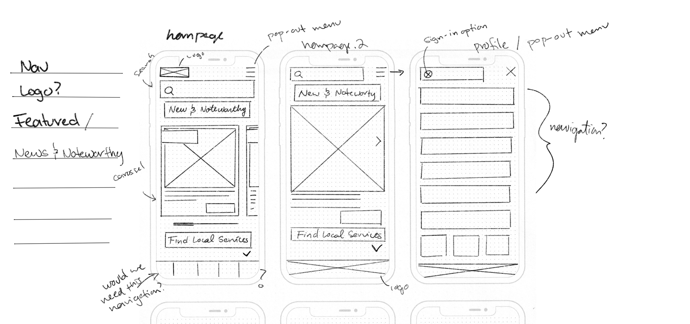

U.S. Department of Agriculture
Case Study: Homepage UI Redesign

Project Brief
Using user research usability testing methods to bring new life to the United States Department of Agriculture website.
Context
For the Univeristy of Denver UX/UI case study assignment. Choose a government website to redesign its user interface.
Team Collaboration
Amanda Sahaida UX Researcher
Garrett Martin UX Researcher & UI Designer
My Role
After user testing was complete from the current USDA's current state was complete, my role shifted to visual design, interactive designer, and usuability testing.
Tools
Duration
3 Weeks
User Testing & Observations
Who's the Users?
We found that users for the USDA vary. A wide spectrum use the site for buisness needs; keeping up-to-date, submission forms, general and specific information. These business range any where from small local own restaurant to Whole Foods to food distribution entities.
The need for non-business purposes seem to be not as high. but it is still interesting to read the lastest information regrading agriculture and similar topics.
Restaurant owners, package designers, chefs, grocery stores and other markets, and other industry professionals.

User Tasks
Users were giving the tasks to open the USDA's website > find a specific form and perform general browsing. We specificly targeted the global navigation and forms given the high demand of usage.
Interview Transcipts
“I can see this being a great resource for small and large businesses. But it feels a little boring and confusing to use.”
“Bummed out about design but not surprised, “its a government website. Navigating is not awful, just a little up lift would do."”
“The UI could be “more colorful and exciting ... towards the bottom gets more lively.””
Information Architecture & Solutions
First understanding how their current site is layed out and opporates. From the user testing is was observed that if users did not specify exactly what to find in the search bar, it was much hard to local items. Clicking through each link became bothersome and frustrating.
Current USDA Navigation
Ensuring that the new navigation contains all the appropratie tabs and information is cruical. Here I anotated the current state of the site along with sub-menus, banenrs, etc. The nubers indicate what the user might see first.
Mood Board & Design
Ensuring that the new navigation contains all the appropratie tabs and information is cruical. Here I anotated the current state of the site along with sub-menus, banenrs, etc. The nubers indicate what the user might see first.

Problem
Users are not staying on the pages long enough before exiting. They experience frustration from find and submiting forms and find the overall aesthic outdated and boring.
Solutions
- developing a new global navigation to help reduce the amount of clicks to the desired location.
- design and adapt a new design system to help engage users.
Prototyping
First understanding how their current site is layed out and opporates. From the user testing is was observed that if users did not specify exactly what to find in the search bar, it was much hard to local items. Clicking through each link became bothersome and frustrating.
Macbook Mockup: Prototype
Design System
Purposing to adapt a new design system. Bringing new life to the site, while maintaining a professional "goverment feel."

Global Navigation
Results based on card sorting, content inventory and more information architecture tools andtechniques.
Starting From the Top
-
Alerts and notifications
This will animate and cyle through -- showing relivent informaiton such as weather alerts, important site alerts, messages, and more.
-
Search
The ability to search the site for anything the user is looking for is a must.
-
Contact and login
I wanted to include contact and a new login options that allows for returing users to have a place for saved documents and information for easier reuse. The contact tab once appeared in the main navigational bar; however, it was determinded that it would have better use and function at the top (like it currently is on their site).
-
Primary Navigation
The options were created from card sorting activites to detered the best names for catigories; Home, Departments & Services, Topics, About USDA, Forms & Public Shortcuts, and Media. Once the user hovers over thier desried tabs.
-
Submenu
Again, card sorting results showing how each tab breaks down. Once the user hovers over thier desried tab, the submenu will display.
-
Footer
Consistent across the site, containing and subscriptions sign-up, social media link icons, a feedback tab, and mroe common requested links/shortcuts.
-
Subscription sign-up and social media links
Users can submit email to future news and updates, and stay in touch using social media.
-
More common links
Just becasue the link is not in the primary navigation does not mean it is not important. This contains more common user links.
-
Feedback tab
Lastly, to help improve the USDA website, users can provide feedback for furture adjustments or if something is not working proporly.


Responsive Design


Skecthing & Ideation
Desktop and Mobile
The user research suggest majority of users browse via desktop. However, I wanted to ensure a cohisive mobile firenldy experience. Design mobil efirst ensured a easier translation to larger screens.


Site Map
A new site map that targets the form paintpoints.
Lo-Fi Navigation Prototype
Desktop and Mobile
The user research suggest majority of users browse via desktop. However, I wanted to ensure a cohisive mobile firenldy experience. Design mobil efirst ensured a easier translation to larger screens.

Testing & Iterations
Getting to the final homepage design, it went through a few iterations. Each take has its own concept of atomic design to be used as the spalsh image "jumbotron" concept. Introducing a full width image, headline, subheader, information, and a call-to-action
Take 1
- The first iteration, the alert tab is below the primary navigation. The origianl site has a message at the top-left telling the user how to determine government sites to be legit. I decided to consolidate that message with the alert bar and keep it in the top-left hand corner.
- The call-to-action is sitting on the bottom, allowing the iamge to be viewed fully without too many disruptions.
- User research suggested that they were interested in highlighting topics more. Take 1 displays an animated card set that expands to full-screen when the user scrolls to that section.
- Department and services was added for a easier access point.
- New and adjusted footer to match new design system and need links.
Take 2
- This take introduces the new consolidated alerts and goverment site message (top-left). The call-to-action and topic information is justified center with elementes flush-left.
- Introducing a slide-show and micro animations to display mroe than one subject at a time and help guide the user to continue down the page.
- User research suggested that they were interested in highlighting topics more. Take 1 displays an animated card set that expands to full-screen when the user scrolls to that section.
- "Featured topics" was adjusted to weekly updates. Suggesting that the user should check in more often for updates and news.
- These cards were adjusted to allow th euser to make more a consious thought to click the "read more" button.
- "Departments and services:" The 'visit' button was moved to its parent container. This will display when the user hovers over the desired department.
- Attempted an animated logo for the footer (was not a fan).
Take 3
Hi-Fi prototyping and testing
- Trials and errors, determinig the best layout for the inital splash elements. Though this option allows the user to see the image and read applible information. User testing suggested a more fuller block.
A/B Testing
Hi-Fi prototyping and testing

- A/B testing was conducted on which color contrast user prefered. The results came back alsomst a 50/50 split; hover the light background with dark type was more desired.
Conclusion
The overall pull from this case study was to push myself as a visual designer based off our user-research. This helped determine the best descions for the users.
Key-Take-Aways
Grew better understanding of atomic design and importance of information architecture.
Not get too focused on visual design. Always reference the current painpoints.
Going Forward
Implement login options and add additional pages.
Client/Stakeholder for feedback and/or approval before continuing development.
More user testing.